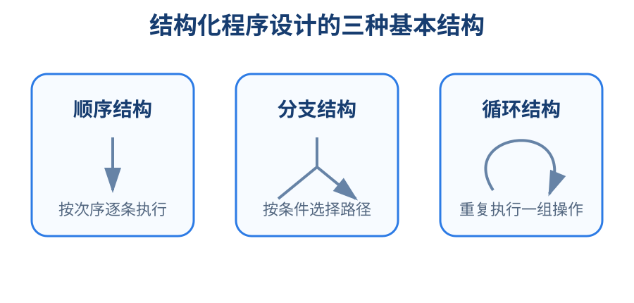
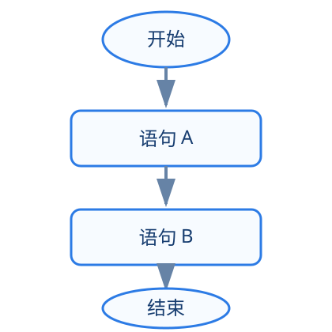
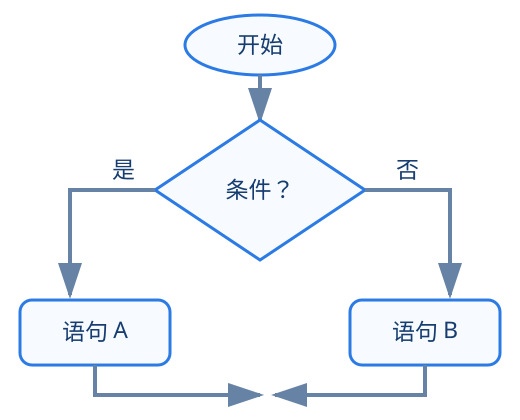
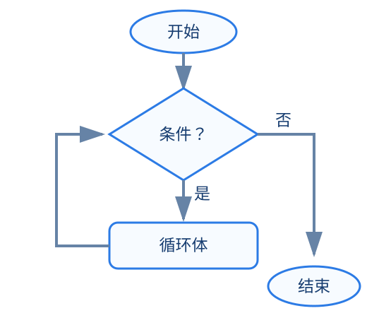
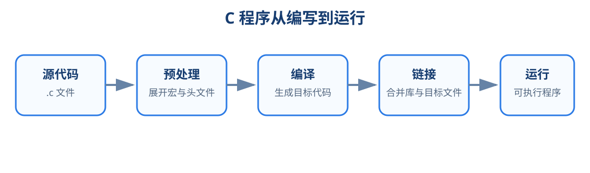
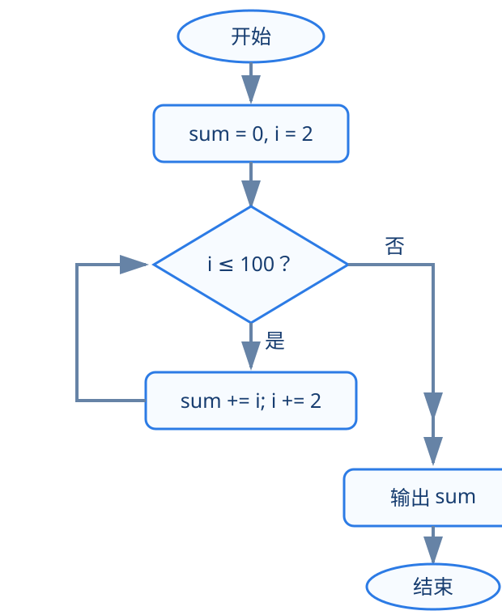

程序设计基础 · 第1章
中医药人工智能学院 · 浙江中医药大学
AI时代
怎样学习程序设计？
程序和程序语言
到底是什么？
一个C程序
怎样产生并运行？
| 模块 | 内容 | 作用 |
|---|---|---|
| 1.1 | AI时代的程序设计学习观 | 建立学习方式 |
| 1.2 | 程序、指令与虚拟计算机 | 认识程序本质 |
| 1.3 | 语言功能、语法、控制结构 | 建立语言整体框架 |
| 1.4 | 第一个C程序、阶乘程序、Python/C比较 | 进入C程序阅读 |
| 1.5 | 编译运行、错误、AI Debug | 衔接上机实验 |
| 1.6 | 问题求解、算法描述、偶数求和 | 形成问题求解闭环 |
| 1.7 | AI协作规则、实验衔接、任务0 | 形成第一次课闭环 |
如果期末给你一个题目，
你把它完整交给AI生成代码——
这算不算“会程序设计”？
A 算B 不算C 要看情况
#include <stdio.h>
int main(void) {
double a, b, c;
scanf("%lf%lf%lf", &a, &b, &c);
double avg = (a + b + c) / 3.0;
double max = a;
if (b > max) max = b;
if (c > max) max = c;
printf("Average: %.2f\n", avg);
printf("Max: %.2f\n", max);
return 0;
}
AI可以很快生成代码，任务结束了吗？
double？理解目标
明确约束
判断方案
验证结果
承担责任
AI特别擅长：解释、生成、补全、修改、提示
人必须负责：目标、判断、验证、选择、责任
人们为解决某种问题，用计算机可以识别的代码，编排的一系列加工步骤。
程序执行过程，本质上是对程序所表达的数据进行处理的过程。
提供一种表达数据与处理数据的功能，要求程序员按照语言规范编程。
计算机最基本的功能，例如实现一次加法运算，或实现一次大小判别。
计算机所能实现的指令的集合。
为完成某个任务而编写的一系列计算机指令的有序组合。
程序名：番茄炒蛋
指令1：拿出两个鸡蛋
指令2：将鸡蛋打入碗中并搅拌
指令3：切番茄
指令4：加热、翻炒、调味
计算机程序比菜谱更严格：每一步都必须精确。
例：编写程序，分别求和与乘积。约定字母表示内存单元，0、1
等数字表示常量；虚拟计算机定义7条指令：
Input A; 输入第1个数据到A
Input B; 输入第2个数据到B
Input C; 输入第3个数据到C
Add A B D; D = A + B
Add C D D; D = C + D
Output D; 输出D
思考：如何求 A + B - C？
Input A;
Add A A D;
Add A D D;
Output D;
Input A;
Set 0 Z;
Add Z A Z;
Add Z A Z;
Add Z A Z;
Output Z;
同一个问题可以有不同程序，但都要表达清楚步骤。
先限定 B 为非负整数。此时 A*B = A + A + ... + A，相当于 B 个 A 相加。
Input A;
Input B;
Set 0 Z;
Add Z A Z;
Add Z A Z;
...
Add Z A Z;
Output Z;
这样的思路可行吗？关键问题在哪里？
Input A;
Input B;
Set 0 X;
Set 0 Z;
BranchEq X B 9;
Add Z A Z;
Add 1 X X;
Jump 5;
Output Z;
适用条件：B 为非负整数；若允许负数，还需要增加符号处理。
思考：如何求 (A+B)*C？
表达要处理的数据类型
表达数据处理流程
表达数据进入和结果输出
把代码组织为独立模块
对某些具有共同特征的数据集合的总称。
例如整数集合：{..., -2, -1, 0, 1, 2, ...}
不同数据类型可以进行不同运算，如：
+ - * / %

任何程序都可以将模块通过三种基本控制结构组合实现。



程序必须符合语法规则，规定代码该怎么写。
int、for、return
123、12.34
+、-、*、/、%、>
{ }、( )、;
2+3*4
int n;
#include <stdio.h>
int main(void)
{
printf("Hello, C!\n");
return 0;
}
main 是什么？printf 做什么？stdio.h？return 0; 是什么意思？但：AI的解释也需要判断。
例如：“C程序从第一行开始执行”——对吗？
#include <stdio.h> // 预处理命令
int main(void) // 主函数：程序入口
{
// 函数体：写具体要执行的语句
return 0; // 程序正常结束
}
C程序由一个或多个函数组成，main 是主函数，有且只有一个。
输入一个正整数 n，输出 n!。例如输入 4，输出
24。
#include <stdio.h>
int factorial(int n);
int main(void)
{
int n, result;
scanf("%d", &n);
result = factorial(n);
printf("%d\n", result);
return 0;
}
int factorial(int n)
{
int i, fact = 1;
for(i = 1; i <= n; i++)
{
fact = fact * i;
}
return fact;
}
main 是入口，factorial
是自定义函数
int n, result; 在内存中准备空间保存整数
main 后面有一个
factorial 函数
scanf("%d", &n) 从键盘读取整数
for 反复执行乘法，实现 n!
a = 10
print(a)
int a = 10;
printf("%d\n", a);
Python常常替你隐藏很多细节；C会逼着你理解这些细节。
a = int(input())
b = int(input())
print(a + b)
#include <stdio.h>
int main(void) {
int a, b;
scanf("%d%d", &a, &b);
printf("%d\n", a + b);
return 0;
}
| 观察点 | Python | C |
|---|---|---|
| 变量类型 | 通常不需显式声明 | 需要明确声明 int 等类型 |
| 语法 | 较简洁 | 分号、花括号等规则更严格 |
| 输入输出 | input / print |
scanf / printf |
| 程序结构 | 脚本式更常见 | 通常从 main 函数开始 |
| 底层细节 | 隐藏较多 | 暴露更多 |

gcc -c test.c
gcc test.o -o test
gcc -o test test.c
gcc -Wall -save-temps test.c -o test
如果使用IDE，“运行”按钮背后也包含编辑、编译、链接和执行的过程。
printf("Hello C!")
少了什么？
pritnf("Hello C!");
发生了什么？
printf("Hello C!\n";
编译器会怎么提示？
错误信息不是失败，而是程序给你的反馈。
程序不符合语言规则，通常由编译器发现。
例如：少分号、括号不匹配、函数名拼错。
程序能运行，但结果不是想要的结果。
需要通过测试、观察和分析来发现。
test.c“把正确代码给我。”
“这段C程序编译失败。请先指出错误原因，并提示我应该检查哪里；先不要直接给完整正确程序。”
问题：求 1–100 之间所有偶数的和
先不要急着写代码，先分析问题。
sum 保存累加结果，初始值为 0
ii 是偶数，就执行
sum = sum + i;

#include <stdio.h>
int main(void)
{
int i, sum = 0;
for(i = 1; i <= 100; i++)
{
if(i % 2 == 0)
{
sum = sum + i;
}
}
printf("%d\n", sum);
return 0;
}
第一次课只看清楚“输入/处理/输出”和“顺序/分支/循环”如何配合。
把 1–100 改为 1–n，需要增加输入，并用 n 控制循环终点。
把条件 i % 2 == 0 改为 i % 2 != 0。
思考：如何计算从 1 到 n 之间的奇数之和？
这比直接问“给我答案”更能帮助学习。
“给我答案。”
复制 → 提交
先自己写
发现错误 → 问AI原因 → 修改
先分析 → 再编码
让AI检查边界 → 自己测试与判断
谁真正学到了东西？
| 使用方式 | 态度 |
|---|---|
| 让AI解释概念、编译错误 | 鼓励 |
| 让AI给提示、检查自己的代码 | 强烈鼓励 |
| 让AI生成测试数据、比较方案 | 鼓励 |
| AI生成代码后，自己分析、修改、验证 | 可以 |
| 复制自己无法解释的AI代码 | 不接受 |
| 把整个作业交给AI，自己不参与 | 不接受 |
| 不测试、不核验就提交AI结果 | 不接受 |
输入长方形的长和宽，计算面积和周长。
只写三行：
输入：……
处理：……
输出：……
把自己的思路告诉AI，让AI辅助完成程序。
前提：你必须看懂并能解释。
允许教材、课件和手机AI助手；要求自己能看懂、能运行、能验证。
main 主函数。